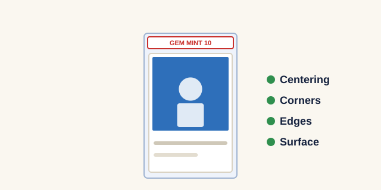

How to Grade Sports Cards: A Beginner's Guide
Grading means sending a card to a professional company that inspects its condition, gives it a score from 1 to 10, and seals it in a tamper-proof plastic case called a slab. A high grade can multiply a card's value, but grading costs money and takes time, so it only makes sense for the right cards. This guide shows you how to get cards graded, from choosing the right card to reading the label.

Is my card worth grading?
Ask yourself three questions before you pay a grading fee:
- Is the card already valuable ungraded? If a raw copy sells for less than the grading fee, grading rarely pays off. Check recent sold prices first using our card value guide.
- Is it a card people collect in graded form? Rookie cards, autographs, numbered parallels, and vintage stars are graded most often.
- Is the condition close to perfect? The difference between a 9 and a 10 can be the difference between a small profit and a big one.
How to check a card's condition
Here's how to grade sports cards yourself before you send them in. Graders look at four things. Check each one under a bright light, holding the card by its edges.
Centering
Compare the borders on the left and right, then top and bottom. Noticeably uneven borders lower the grade.
Corners
Look for any rounding, fraying, or white showing through. Sharp, square corners are essential for a top grade.
Edges
Run your eye along all four edges for chips, nicks, or roughness, especially on cards with dark borders.
Surface
Tilt the card in the light to spot scratches, print lines, dents, or fingerprints.
How to submit cards for grading, step by step
- Choose a grading company. The best-known companies each have their own grading scale, label style, and resale reputation. Fees and turnaround times change often, so check each company's current pricing on its own website.
- Pick a service level. Most companies charge more for faster turnaround and for cards with higher declared values.
- Prepare each card. Place it in a clean penny sleeve, then into a semi-rigid card saver. Avoid hard toploaders unless the company asks for them.
- Fill out the submission form. List every card with its year, brand, card number, player, and declared value.
- Pack and ship. Sandwich the cards between cardboard, use a sturdy box, and buy shipping insurance and tracking.
- Wait and track. Turnaround ranges from a few days to several months depending on the company and service level.
What do card grades mean?
- 10 (Gem Mint): Virtually perfect. The most valuable grade by far.
- 9 (Mint): One very minor flaw. Still highly desirable.
- 7 to 8 (Near Mint): Small visible wear, such as slightly soft corners.
- 5 to 6 (Excellent): Noticeable wear, common for older cards.
- 1 to 4 (Poor to Very Good): Heavy wear, creases, or damage. Usually graded only for rare vintage cards.
Mistakes to avoid
- Grading low-value cards and spending more on fees than the cards will ever sell for.
- Wiping cards with a shirt or tissue, which can scratch the surface.
- Submitting cards in loose toploaders that let them slide and get dinged in transit.
- Forgetting to insure the package.
Looking for a card that's already graded? Browse the graded cards in our shop.